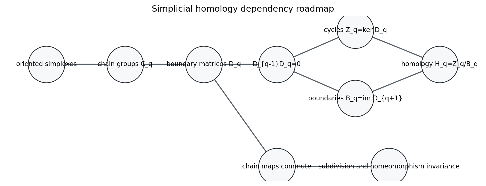
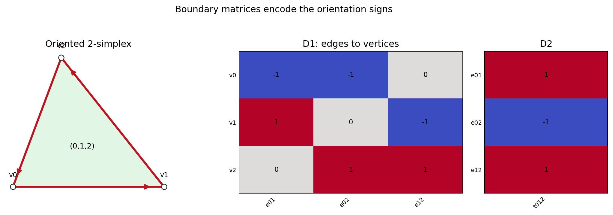
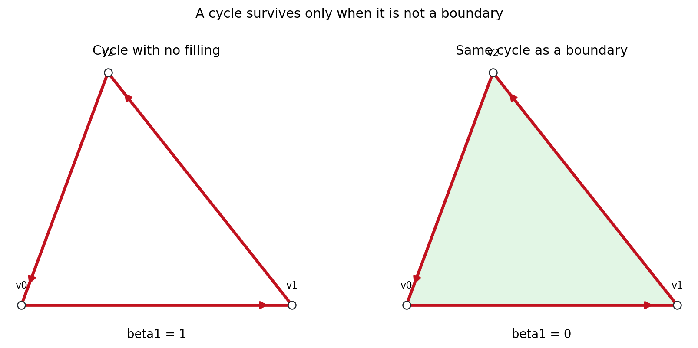
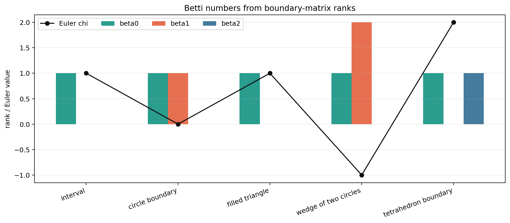
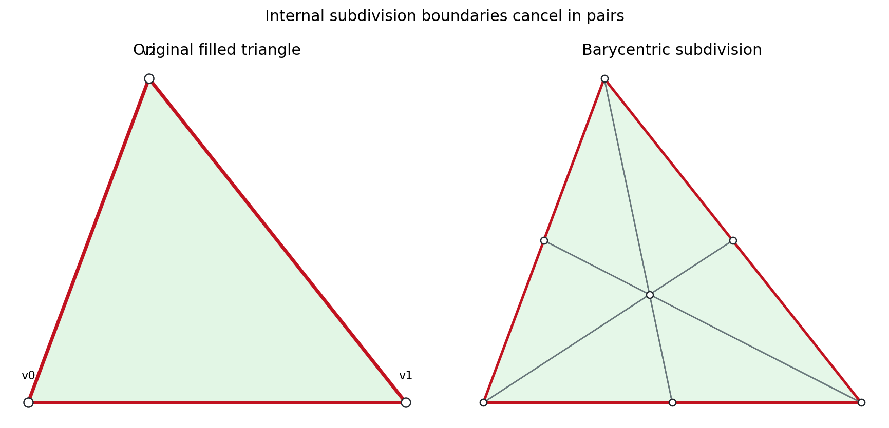
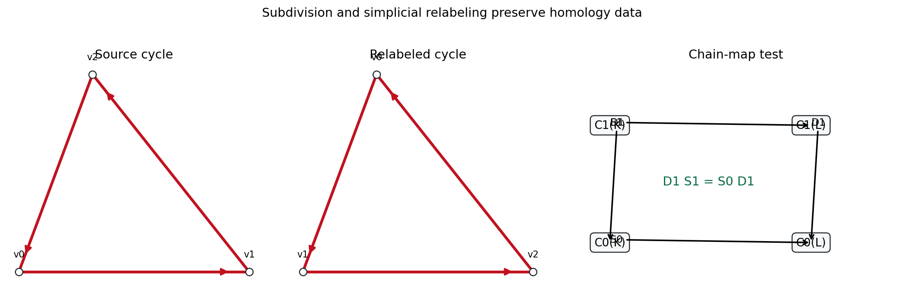
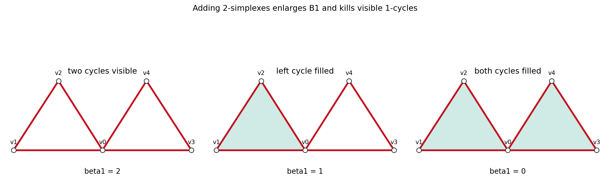

Closed chains become holes only after boundaries from higher-dimensional fillings have been quotiented away.
Source span: printed pp. 173-194; PDF pp. 182-202. Notebook: chapter-08-simplicial-homology.



| Complex | \(\dim C_1\) | rank \(D_1\) | rank \(D_2\) | \(\beta_1\) |
|---|---|---|---|---|
| circle boundary | 3 | 2 | 0 | 1 |
| filled triangle | 3 | 2 | 1 | 0 |
| wedge of two circles | 6 | 4 | 0 | 2 |
| tetrahedron boundary | 6 | 3 | 3 | 0 |

| Complex | \((\beta_0,\beta_1,\beta_2)\) | \(\chi\) |
|---|---|---|
| interval | (1, 0, 0) | 1 |
| circle boundary | (1, 1, 0) | 0 |
| filled triangle | (1, 0, 0) | 1 |
| wedge of two circles | (1, 2, 0) | -1 |
| tetrahedron boundary | (1, 0, 1) | 2 |
| Complex | \(n_0-n_1+n_2\) | \(\beta_0-\beta_1+\beta_2\) |
|---|---|---|
| interval | 2 - 1 + 0 = 1 | 1 - 0 + 0 = 1 |
| circle boundary | 3 - 3 + 0 = 0 | 1 - 1 + 0 = 0 |
| filled triangle | 3 - 3 + 1 = 1 | 1 - 0 + 0 = 1 |
| wedge of two circles | 5 - 6 + 0 = -1 | 1 - 2 + 0 = -1 |
| tetrahedron boundary | 4 - 6 + 4 = 2 | 1 - 0 + 1 = 2 |

| Model | \(n_0\) | \(n_1\) | \(n_2\) | \(\chi\) | Betti |
|---|---|---|---|---|---|
| original filled triangle | 3 | 3 | 1 | 1 | (1, 0, 0) |
| barycentric subdivision | 7 | 12 | 6 | 1 | (1, 0, 0) |


| Complex | \(\dim Z_1\) | rank \(B_1\) | \(\beta_1\) | \(\chi\) |
|---|---|---|---|---|
| two cycles visible | 2 | 0 | 2 | -1 |
| left cycle filled | 2 | 1 | 1 | 0 |
| both cycles filled | 2 | 2 | 0 | 1 |
| Check | Purpose | Status |
|---|---|---|
| boundary squared zero | makes \(B_q\subseteq Z_q\) | true |
| rank-nullity | guards Betti calculations | true |
| Euler characteristic | compares two ledgers | true |
| Gudhi comparison | independent homology check | true |
| subdivision invariance | tests triangulation independence | true |
| chain-map commutation | tests functoriality | true |